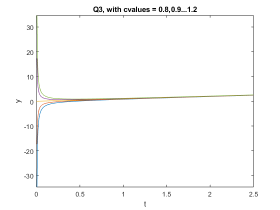
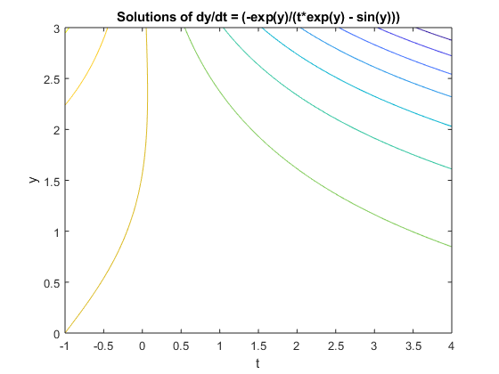
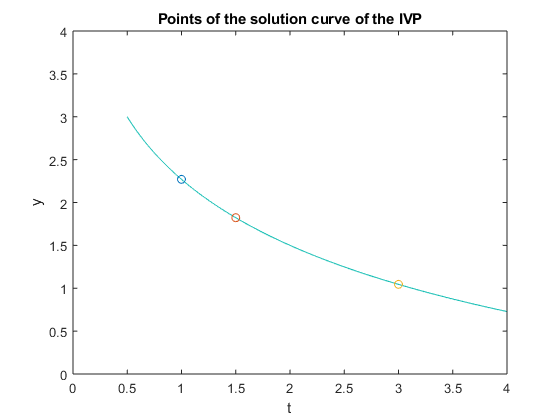

Contents
QUESTION 1
syms t c
sol1 = dsolve('Dy + y/t = 2','y(1) = c','t')
tvals = [0.01,0.1,1,10]
yvals = subs(sol1,'t',tvals)
cvals = [0.8, 1, 1.2]
subs(yvals,'c',cvals)
for j = 0.8:0.1:1.2
ezplot(subs(sol1,'c',j), [0,2.5])
hold on
end
axis tight
xlabel t, ylabel y
title 'Q3, with cvalues = 0.8,0.9...1.2'
sol1 =
t + (c - 1)/t
tvals =
0.0100 0.1000 1.0000 10.0000
yvals =
[ 100*c - 9999/100, 10*c - 99/10, c, c/10 + 99/10]
cvals =
0.8000 1.0000 1.2000
ans =
[ -1999/100, 1/100, 2001/100, -19/10, 1/10, 21/10, 4/5, 1, 6/5, 499/50, 10, 501/50]

QUESTION 2
syms y t
eq = 'Dy*(t*exp(y) - sin(y)) + exp(y) = 0'
sol1 = dsolve(eq,'t')
f = -cos(y) - t*exp(y)
figure
ezcontour(f, [-1,4,0,3])
title 'Solutions of dy/dt = (-exp(y)/(t*exp(y) - sin(y)))'
figure
c = subs(f, [t,y],[2,1.5]);
ezplot(f-c,[-1,4,0,3])
title 'Solutions of dy/dt with initial condition (2,1.5)'
axis([0,4,0,4])
hold on
for j = [1,1.5,3]
f1 = @(y) eval(subs(f,t,j)-c);
y1 = fzero(f1,2)
[j, double(y1)]
plot(j,double(y1),'o')
end
hold off
title 'Points of the solution curve of the IVP'
eq =
'Dy*(t*exp(y) - sin(y)) + exp(y) = 0'
Warning: Unable to find explicit solution. Returning implicit
solution instead.
sol1 =
solve(cos(y) + t*exp(y) == -C17, y)
f =
- cos(y) - t*exp(y)
y1 =
2.2698
ans =
1.0000 2.2698
y1 =
1.8228
ans =
1.5000 1.8228
y1 =
1.0453
ans =
3.0000 1.0453
 
QUESTION 3
(a)
figure
[T, Y] = meshgrid(-2:0.2:2, -2:0.2:2);
S = -T.* Y.^3;
L = sqrt(1 + S.^2);
quiver(T,Y,1./L ,S./L,0.5), axis equal tight
xlabel 't', ylabel 'y'
title 'Direction Field for dy/dt = -ty^3'; hold off
sol1 = dsolve('Dy =-t*y^3','y(0)=1/sqrt(c)','t')
sol1 = dsolve('Dy =-t*y^3','y(0)=-1/sqrt(c)','t')
figure; hold on;
syms t c;
sol = dsolve('Dy = -t*(y^3)','y(0) = 1/sqrt(c)','t');
for cval = -5:1:5
fplot(subs(sol,'c',cval),[-3,3])
end
hold off
figure; hold on;
syms t c;
sol = dsolve('Dy = -t*(y^3)','y(0) = 1/sqrt(c)','t');
for cval = -5:1:5
fplot(subs(sol,'c',cval),[-3,3])
end
hold on
[T,Y] = meshgrid([-2:.2:3], [-2:.2:3]);
S = -T.*(Y.^3);
L = sqrt(1+S.^2);
quiver(T,Y,1./L,S./L,0.5)
axis([-2 2 -2 2])
hold off
sol1 =
(2^(1/2)*(1/(t^2/2 + c/2))^(1/2))/2
-(2^(1/2)*(1/(t^2/2 + c/2))^(1/2))/2
sol1 =
(2^(1/2)*(1/(t^2/2 + c/2))^(1/2))/2
-(2^(1/2)*(1/(t^2/2 + c/2))^(1/2))/2
QUESTION 4
syms y a
disp('roots of y -')
sol = solve((a - 1)*y -y.^3)
a=-1;
[T,Y] = meshgrid([-1:.1:1], [-1:.1:1]);
S = (a-1).*Y-Y.^3;
L = sqrt(1+S.^2);
figure
quiver(T,Y,1./L,S./L)
title('a=-1');
xlabel('t');
ylabel('y');
axis tight
a=0;
[T,Y] = meshgrid([-1:.1:1], [-1:.1:1]);
S = (a-1).*Y-Y.^3;
L = sqrt(1+S.^2);
figure
quiver(T,Y,1./L,S./L)
title('a=0');
xlabel('t');
ylabel('y');
axis tight
a=1;
[T,Y] = meshgrid([-1:.1:1], [-1:.1:1]);
S = (a-1).*Y-Y.^3;
L = sqrt(1+S.^2);
figure
quiver(T,Y,1./L,S./L)
title('a=1');
xlabel('t');
ylabel('y');
axis tight
a=1.5;
[T,Y] = meshgrid([-2:.2:2], [-2:.2:2]);
S = (a-1).*Y-Y.^3;
L = sqrt(1+S.^2);
figure
quiver(T,Y,1./L,S./L)
title('a=1.5');
xlabel('t');
ylabel('y');
axis tight
a=2;
[T,Y] = meshgrid([-2:.2:2], [-2:.2:2]);
S = (a-1).*Y-Y.^3;
L = sqrt(1+S.^2);
figure
quiver(T,Y,1./L,S./L)
title('a=2');
xlabel('t');
ylabel('y');
axis tight